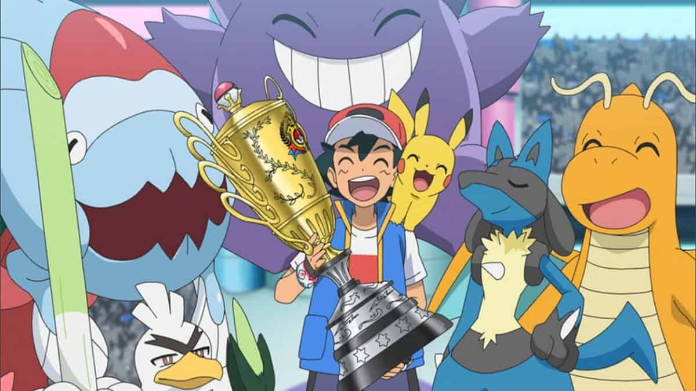

Sobre Mi

Mi nombre es Ash Ketchum, originario de Pueblo Paleta. Me encantan los Pokémon y ansio capturarlos a todos algún día. Mi mejor amigo y compañero es Pikachu y gracias a él y a mis otros compañeros Pokémon logre alzarme con el campeonato mundial en el Torneo de los Ocho Maestros. A dia de hoy sigo viajando por todos los rincones del mundo Pokémon haciendo realidad mis sueños y felices a mis Pokémon.
- Contacto
- Formación
- Experiencia
- Acerca de
Información relevante
Edad:
- 22 de mayo de 1987 (10 años)
Estudios y Experiencia profesional:
- Ninguno, solo capturo Pokémon.
Logros y Palmarés:
- Conseguir las 8 medallas de gimnasio en (Kanto, Johto, Islas Naranja, Hoenn, Sinnoh, Teselia, Kalos, Alola, Galar)
- 1x Campeón Mundial, 1x Campeón de Alola, 1x Campeón de las Islas Naranja, 1x Liga Pokemón de la Meseta Añil (16 mejores), 1x Liga Pokémon de Johto (8 mejores), 1x Liga Pokémon de Hoenn (8 mejores), 1x Liga Pokémon de Sinnoh (4 mejores), 1x Liga Pokémon de Teselia (8 mejores), Subcampeón de la Liga Pokémon de Kalos, Ganador del Frente Batalla.
- Títulos menores como : 1x Competición de Sumo Pokémon (Ganador), 1x Grand Prix-P1 (Ganador), 1x Pasarela Corazón (3er lugar)...
Personalidad, Metas y Aspiraciones

Soy una persona alegre y risueña, o por lo menos eso me dicen. A veces me obsesiono con ganar gracias a mi pasión por los combates Pokémon, pero aprendo de todas las derrotas e intento sobreponerme a ellas para poder superarme. Fue un largo trabajo cuidar y conseguir Pokémon al principio, pero gracias a Pikachu aprendí el valor de la amistad y del vínculo entrenador/Pokémon. Soy entusiasta, glotón y me encanta viajar. A veces soy un poco cabezota y me obsesiono demasiado con mis metas y objetivos, pero eso me ayuda a superarme día tras día. Y, después de tanto esfuerzo y aventuras, finalmente he alcanzado mi destino… ¡convertirme en un verdadero Maestro Pokémon!